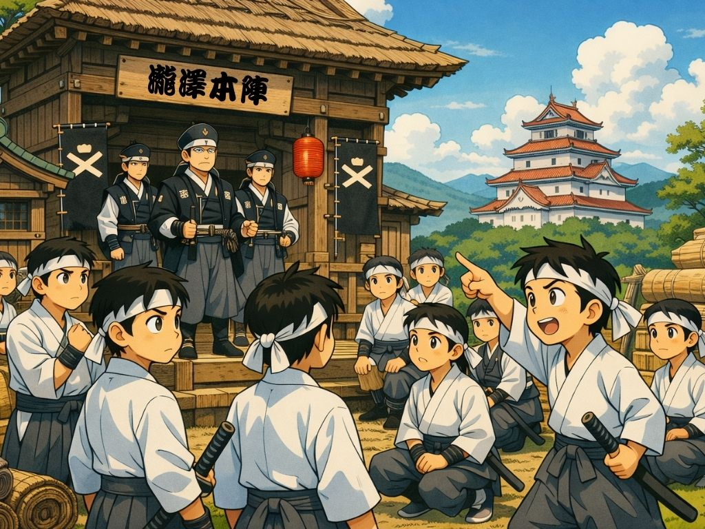
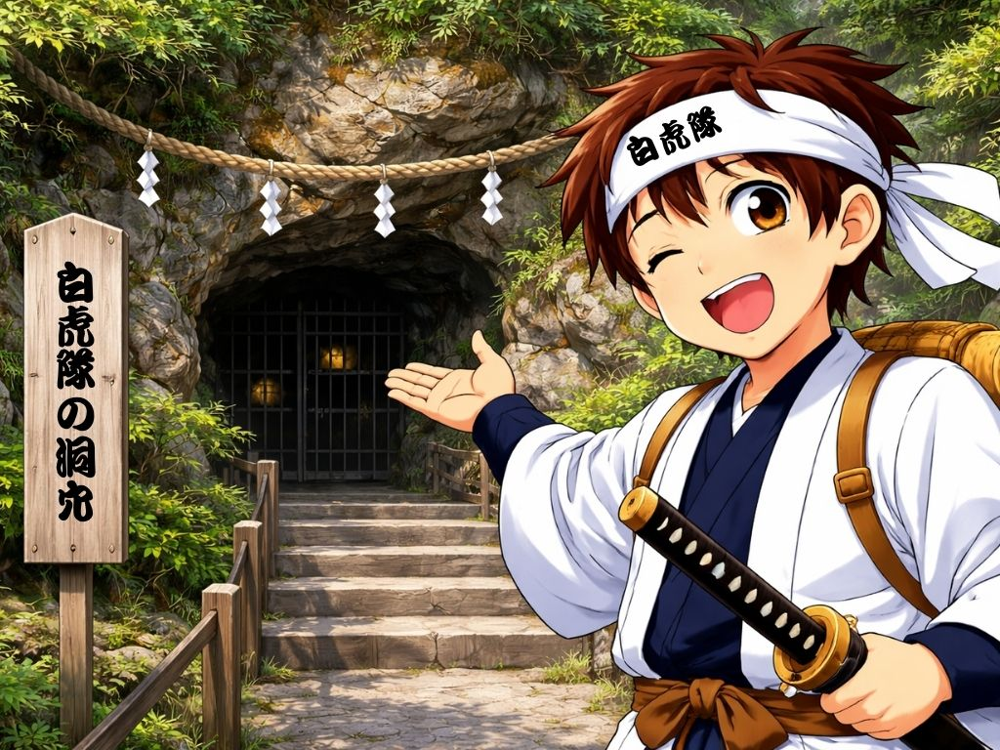
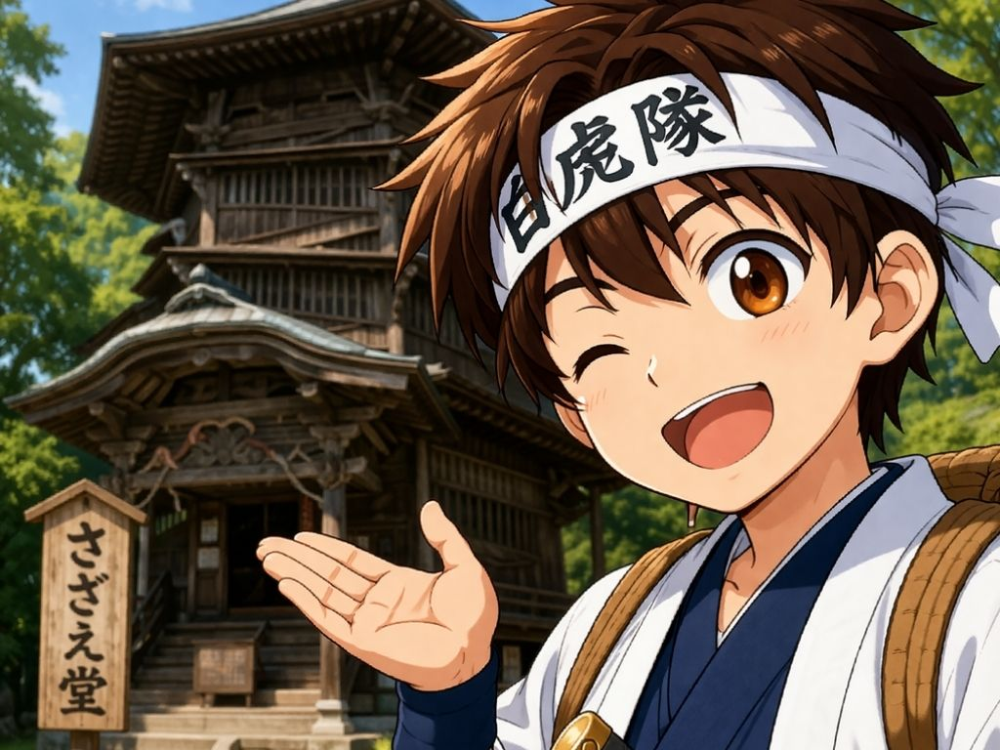
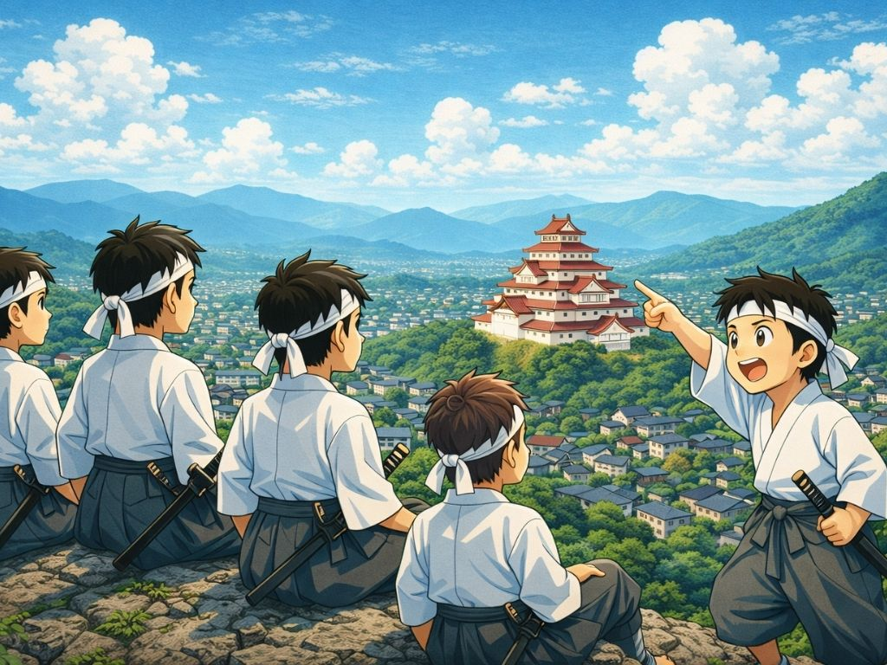
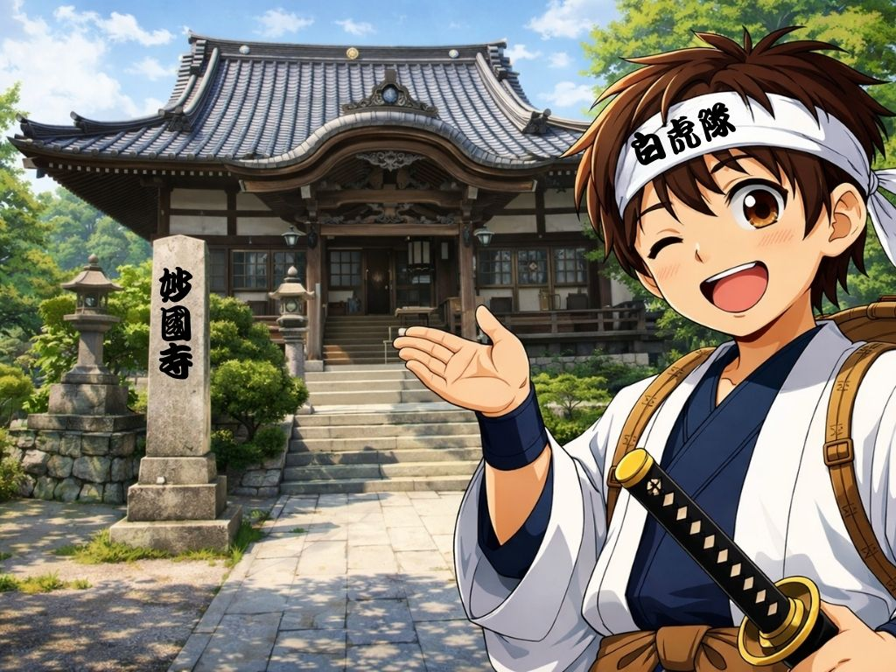

歩いて巡りやすい
試供版では、飯盛山周辺を無理なく歩ける範囲で構成しています。歴史散策として楽しみながら、順番に巡ることができます。
このコースでは、飯盛山周辺に点在する歴史スポットを順番に巡ります。 まずは全体の流れを見て、気になった場所からゆっくり歩いてみてください。
一路くんからの案内
コースは、滝沢本陣から始まり、白虎隊の洞穴、さざえ堂、飯盛山頂、妙国寺へと続きます。 それぞれの場所でQRコードを読むと、そのスポットの説明ページが開きます。
まずは全体像をつかめるように、試供版のコースを3つの視点でまとめています。
試供版では、飯盛山周辺を無理なく歩ける範囲で構成しています。歴史散策として楽しみながら、順番に巡ることができます。
各地点に設置されたQRコードをスマホで読むと、その場で説明ページが開きます。現地の景色と説明がつながるのが特徴です。
今は観光QRガイドですが、今後はスタンプラリー、クイズ、達成画面などへ広げやすい設計を前提にしています。
基本は、次の順番で進むだけです。途中から読んでも大丈夫ですが、初めての方はこの順で進むと物語がつながりやすくなります。
それぞれのスポットには、現地で見てほしい景色や背景があります。気になる場所から個別ページを開いても楽しめます。





この試供版は、まず「現地でQRを読み、各スポットの説明を見る」体験を確認するための構成です。 今後はスタンプ取得、達成ページ、応募導線などへ発展できるように設計しています。